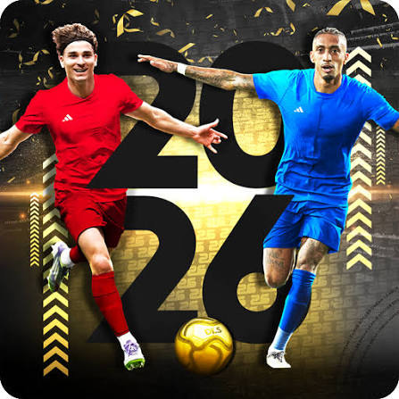
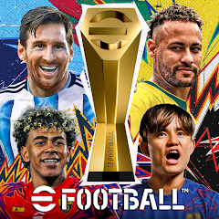
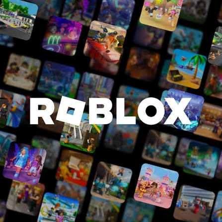

Favourite Player
Cristiano Ronaldo
His dedication, mentality, work ethic, athleticism, and desire to keep improving inspire me as I work towards becoming a better footballer.
7
Football is my biggest passion, but the things I enjoy outside the pitch also shape who I am.
Football is more than a sport to me. It is something I enjoy playing, watching, learning about, and improving at every opportunity.
I play as a striker and enjoy being involved in the attacking side of the game. Scoring goals, creating chances, making runs, and helping the team are some of the things I enjoy most about football.
I want to keep developing my game through training, matches, and learning from better players around me.
His dedication, mentality, work ethic, athleticism, and desire to keep improving inspire me as I work towards becoming a better footballer.
Football is number one, but I also enjoy other sports when I get the chance.
I enjoy playing table tennis, especially because of the speed, reactions, movement, and concentration it requires.
Football remains my favourite sport and the one I am most passionate about developing in.
When I'm not training or playing football, gaming is one of the ways I like to relax and have fun.

One of my favourite football games. I enjoy building my squad, improving players, and competing in matches.
DLSAnother football game I enjoy playing, especially for building teams and playing competitive matches.
FC Mobile
A tactical football simulation game where I refine my tactical knowledge, team chemistry, and control on the pitch.
eFootball
A fun and creative platform to hangout, explore custom worlds, play minigames, and unwind with friends.
RobloxFootball is the journey I'm committed to, and there's still a lot more ahead. Follow the progress, explore the gallery, or get in touch.